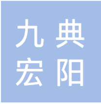
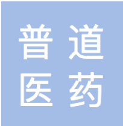
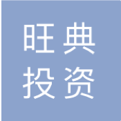

九典制药
基本信息 :
英文名称 : Hunan Jiudian Pharmaceutical Co., Ltd.
成立日期 : 2001-01-19
统一社会信用代码 : 91430100722520761D
注册资本 : 234,680,000 CNY
法定代表人 : 朱志宏
注册地址 : 湖南省长沙市浏阳市经济技术开发区健康大道1号
公司网站 : www.hnjiudian.com
经营范围 :
药品、二类医疗器械、消毒剂、化工产品、卫生用品、化妆品、保健品、保健食品、食品等的研发；化学药品制剂、化学药品原料药、生物药品等的制造；药用辅料、一类医疗器械、二类医疗器械等的生产；自营和代理各类商品及技术的进出口等。
公司简介 :
公司座落于长沙国家生物产业基地，是集研发、生产、销售于一体的现代化制药企业。公司主营业务为医药产品的研发、生产和销售及技术转让，产品主要涵盖药品制剂、原料药、药用辅料及植物提取物四大类别。公司相继被认定为国家“高技术产业化示范工程”企业、国家“产业技术成果转化项目”企业、国家火炬计划重点高新技术企业、湖南省高新技术企业、湖南省医药工业十佳企业、湖南省首批示范性医药企业、湖南省知识产权培育工程优秀企业、湖南省纳税信用A级单位、湖南省信贷诚信单位，“九典”商标被评为湖南省著名商标。公司拥有符合国家GMP标准的原料药车间、口服固体制剂车间、口服液体制剂车间、外用制剂车间、药用辅料车间、植物提取车间、医疗器械车间等，并配备有先进的生产检验设备。公司已获得一百多个新药证书或生产批件，已申请专利近百项，承担了十多项国家级项目，多个项目获得湖南省科技进步二、三等奖。
关联公司 :



企业标签
国家重点扶持
高新技术企业
团队实力一般
财力平平
企业信用
企业信用指数为综合企业实力、资本状况、核心技术、舆情趋势等多维度的综合指标， 采用的数据截止至2019年7月31日18:30。 跟同行业企业相比，该企业信用得分位于中位数附近，信用评级为“一般”。
企业实力
截止2019年7月31日，九典制药企业市值为256035.88元（RMB），行业中位市值约为九典制药的2倍，行业龙头市值约为九典制药的114倍。
企业实力为“偏低”。
同业地位
同业地位指标由综合比较、估值分析比较、盈利预测比较、财务比率比较、财务数据比较五个维度，共六个指标综合而成。
TOP 5 竞争对手
| 企业排名 | 公司名称 | 市场估值 | 企业价值/收入（倍） | 注册资本 | 成立日期 |
|---|---|---|---|---|---|
| 1 | 江苏恒瑞医药股份有限公司 | 29199419.33 | 15.95 | 442,281.4万 | 1997/4/28 |
| 2 | 深圳迈瑞生物医疗电子股份有限公司 | 19111882.39 | 13.44 | 121,569.1万 | 1999/1/25 |
| 3 | 上海药明康德新药开发有限公司 | 10529342.42 | 10.29 | 600,000万 | 2002/4/2 |
| 4 | 云南白药集团股份有限公司 | 9777244.99 | 3.67 | 104,140万 | 1993/11/30 |
| 5 | 重庆智飞生物制品股份有限公司 | 7328000.00 | 11.24 | 160,000万 | 1995/7/20 |
健康指数
财务健康指数
运营健康指数
投资健康指数